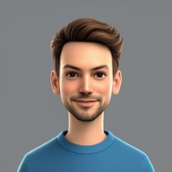

Senior Product Engineer
Jamie
McDonald
I build customer identity solutions at Waitrose — the systems that quietly let millions of shoppers sign in, stay safe, and pick up where they left off.
Role
Senior Product Engineer
Customer Identity, Waitrose
Location
United Kingdom
GMT · remote-friendly
Off-hours
family
saltwater aquatics
home automation
sci-fi & fantasy books
video games